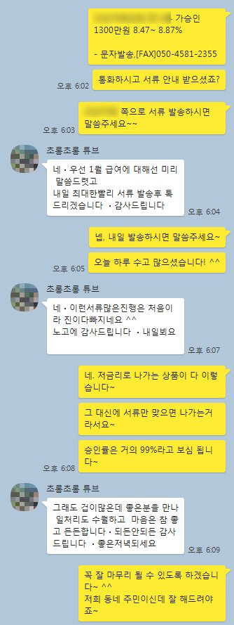
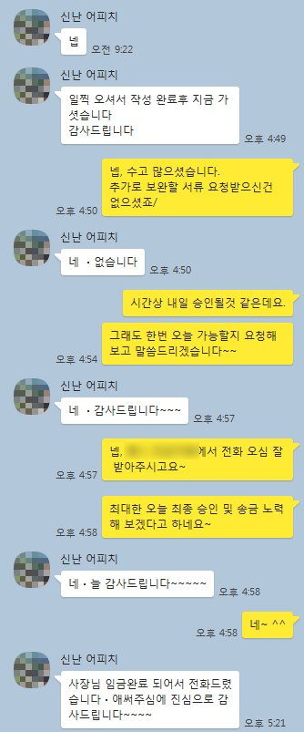

4대보험 미가입 직장인 사용중인 대부업 채무통합 사례
안녕하세요~ 뱅크앤론 조영우 이사입니다.
오늘은 대부업 대출을 3건 사용중이시던, 4대보험 미가입된 직장인 고객님께 채무통합 도움 드린 사례에 대하여 공유드리겠습니다~
해당 고객님의 대략적인 프로필은 아래와 같습니다.
- 30대 여성 고객
- 직장인 (4대보험 미가입)
- 근무기간 4개월, 월급여 250만원 통장 수령
- 기대출 : 캐피탈 300만, 저축 300만, 대부업 3건 1000만
직장으로 건강보험이 가입되어 있지 않고, 소득 신고없이 급여를 받으시다보니 기존 대출을 2금융권 소액대출과 대부업 위주로 보유하고 계셨습니다.
이에 고객님께 적합한 상품으로 도움드렸고, 최종 1300만 8.87%로 승인되시어 대부업 채무 전액 상환후 추가 여유자금도 마련할수 있게 되셨습니다.
아래는 해당 고객님과의 실제 카톡 대화내용입니다. 참고 부탁드리겠습니다.

